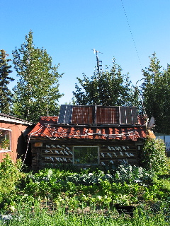
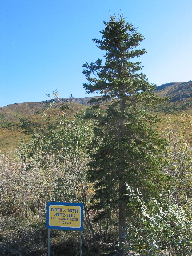
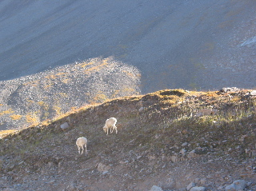
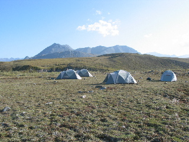

Day 8 — 2004/08/21
This morning we went into Wiseman, and visited with Jack Reakoff. He lives here year round, hunting and traping for a living. He also gathers, hunts, and grows most of his food. The little he does buy, he gets once a year. What little power he uses comes from solar power when there is sun, or a small generator for the long dark months. He was very interesting person to have met.

Then it was back to the road to make it to our next campsite. On our way, we passed the last spruce tree and saw some sheep.

Then we made camp at Galbarith Lake. For the next two nights, we had
our tents put up on the tundra. With no trees around, even the view
from next to the tents is vast. So I made another
panoramic.